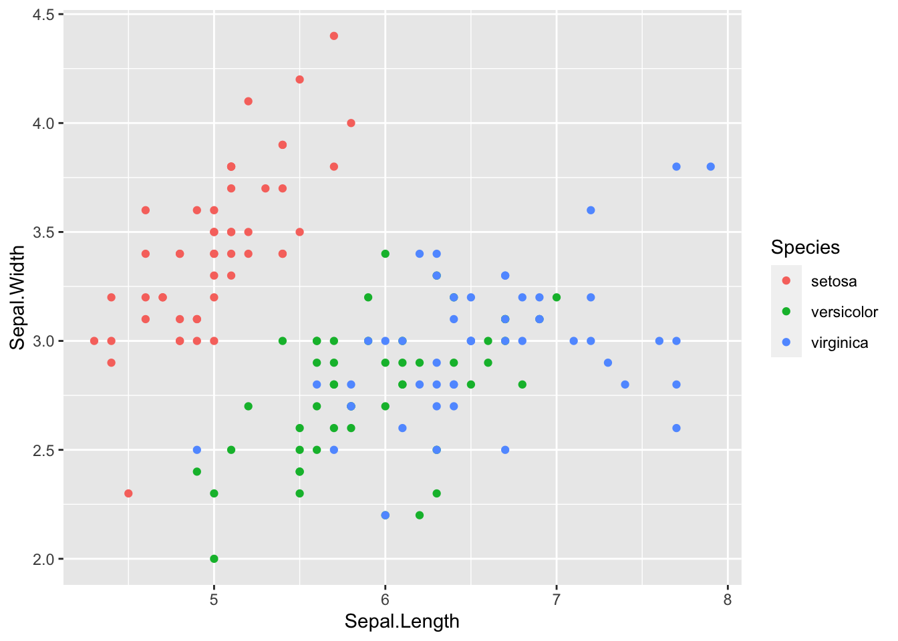
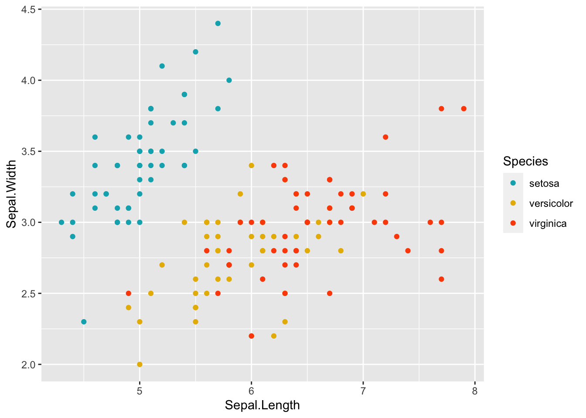
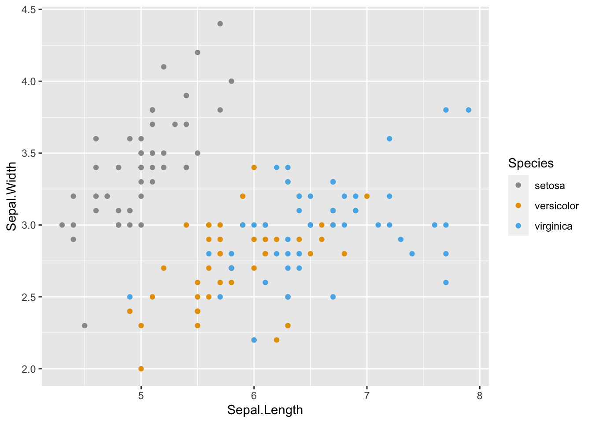
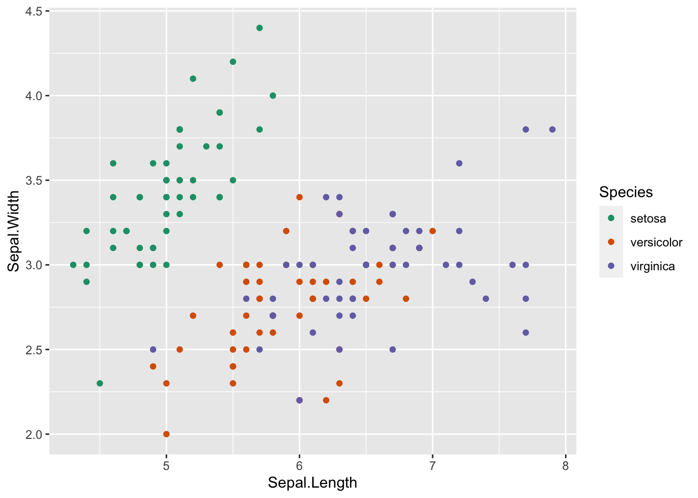

![]()

Friendly palette

Use colors with ggplot2
library(ggplot2)
### To use for fills, add scale_fill_manual(values=cbPalette)
### To use for line and point colors, add scale_colour_manual(values=cbPalette)
### Generate a basic `ggplot2`. Map the color argument to a factor or grouping variable:
p1 <- ggplot(iris, aes(Sepal.Length, Sepal.Width)) +
geom_point(aes(color = Species))
p1
## Set the color palette manually using a custom color scale:
p2 <- p1 + scale_color_manual(values = c("#00AFBB", "#E7B800", "#FC4E07"))
p2

## Use color blind-friendly palette:
cbp1 <- c(
"#999999", "#E69F00", "#56B4E9", "#009E73",
"#F0E442", "#0072B2", "#D55E00", "#CC79A7"
)
p3 <- p1 + scale_color_manual(values = cbp1)
p3
## Use RColorBrewer palettes:
p4 <- p1 + scale_color_brewer(palette = "Dark2")
p4

Reference
- http://www.cookbook-r.com/Graphs/Colors_(ggplot2)/
- http://www.sthda.com/english/wiki/colors-in-r
- https://stackoverflow.com/questions/57153428/r-plot-color-combinations-that-are-colorblind-accessible